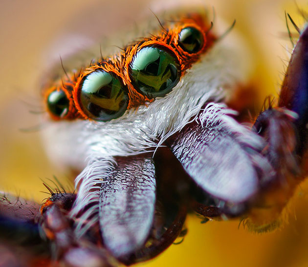

Stawonogi
Stawonogi to najliczniejszy typ zwierząt. Należą do nich:
Stawonogi można spotkać we wszystkich środowiskach:
- Wodnym
- Lądowym
- W glebie
- W powietrzu
Stawonogi mają kilka wspólnych cech:
- Segmentowane ciało, pokryte grubym i sztywnym pancerzem z chityny
- Pancerz, stanowiący szkielet zewnętrzny, do którego od wewnątrz przytwierdzone są rozwinięte mięśnie, dzięki którym stawonogi mogą się poruszać
- Linienie = zrzucanie starego pancerza
- Odnóża, składające się z połączonych stawowo części
- Dwuboczą symetrię
Pajęczaki
Charakterystyka pajęczaków
Pajęczaki to stawonogi głównie lądowe. Żyją na łąkach, w lasach i w ludzkich domach. Pajęczaki są zazwyczaj drapieżnikami. Niektóre z nich są roślinożercami, saprotrofami, pasożytami roślin i zwierząt, w tym człowieka. Pajęczaki są rozdzielnopłciowe. Przedstawiciele płci męskiej i żeńskiej często różnią się wielkością (samice bywają dużo większe). Prawie wszystkie pajęczaki przechodzą rozwój prosty. Wymiana gazowa odbywa się przez powierzchnię ciała, przez tchawki lub płucotchawki.
Budowa pajęczaków
Pajęczaki mają:
- Głowotułów, złożony z:
- Odnóży gębowych (szczękoczółek)
- Odnóży gębowych (nogogłaszczek)
- Odnóży krocznych
- Odwłok
{kind=link}
Pająki
Pająki to najliczniejsza grupa pajęczaków. Obejmuje zwierzęta od 0.5mm do 12cm, z których większość to drapieżniki. U pająków na odwłoku występują gruczoły przędne, których ciągliwa wydzielina twardnieje na powietrzu, w postaci elastycznej nici, o dużej wytrzymałości na rozerwanie.Ciekawostka: wytrzymałość nici pajęczej jest dwukrotnie większa niż wytrzymałość nici stalowej o tym samym przekroju.
Z tych nici pająki budują sieci, w które chwytają swoje ofiary. Pająki unieruchamiają je jadem, po czym wstrzykują do wnętrza ofiary soki trawienne. Następnie strawione wnętrzności ofiary wsysają w formie płynu. Pająki wykle mają cztery pary oczu, trzy z przodu a czwartą po bokach głowotułowia.
Inni przedstawiciele pajęczaków
Oprócz pająków, do pajęczaków zaliczamy:
- Skorpiony
- Kosarze
- Roztocze
Owady
Termit
Modliszka
Ważka
Motyl
Charakterystyka owadów
Owady to najliczniejsza grupa zwierząt. Są też najbardziej rozpowszechnioną i bogatą w gatunku grupą zwierząt. Opisano już ponad milion gatunków.
Budowa owadów
Owady mają:
- Głowę, na której znajdują się:
- Para czułków
- Oczy
- Aparat gębowy
- Tułów, składający się z:
- Dwóch par skrzydeł
- Trzech par odnóży krocznych
- Odwłok
{kind=link}
Rola owadów w ekosystemie
Pozytywna
- Zapylanie kwiatów
- Wytwarzanie miodu
- Oczyszczanie środowiska
Negatywna
- Wyrządzanie szkód w uprawach
- Niszczenie produktów żywnościowych
- Niszczenie drewnianych konstrukcji
Skorupiaki
Charakterystyka skorupiaków
Skorupiaki głównie zwierzęta wodne (żyją przede wszystkim w morzach). Mają zróżnicowaną budowę. Pancerz skorupiaków, oprócz chityny, zawiera dużo związków wapnia.
Budowa skorupiaków
Skorupiaki mają:
- Głowotułów, składający się z:
- Czułków
- Oczu
- Szczypiec
- Odnóż krocznych
- Segmenty odwłoka
- Wachlarz
{kind=link}
Do skorupiaków zaliczamy:
- Kraby
- Krewetki
- Kryle
- Rozwielitki
- Raki
- Stonogi
- Langusty
- Homary
Znaczenie skorupiaków
Skorupiaki są źródłem pokarmu dla wielu ryb i wielorybów. Są przysmakiem dla niektórych ludzi.